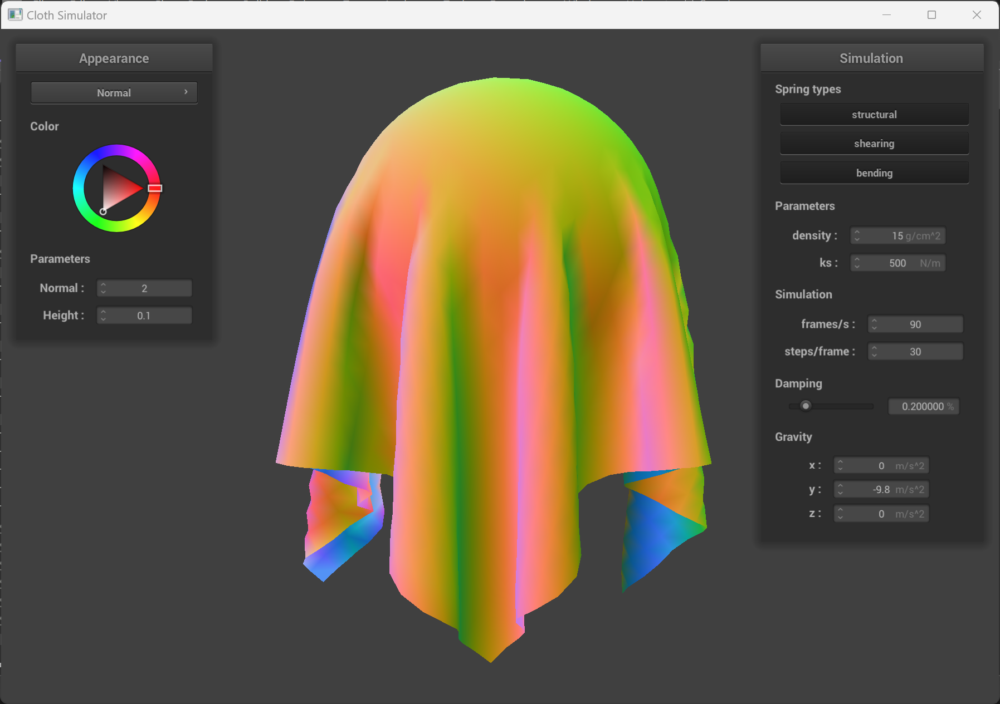

Overview
Give a high-level overview of what you implemented in this project. Think about what you've built as a whole. Share your thoughts on what interesting things you've learned from completing the project.
In this assignment, we construct a grid of point masses connected by springs to simulate a cloth-like material. We use numerical integration to simulate the dynamics of such a system, handling collisions with objects and self-collisions. We also write a variety of shaders to capture various shading methods, including Blinn-Phong shading, texture mapping, displacement and bump mapping, and environment mapping. Overall, we construct a simple physically-based simulation that can render dynamics in real time.
Part I: Masses and springs
We implemented the point masses by adding them to a vector in row major order. We then constructed all the springs by considering the appropriate neighbor interactions (nearest neighbors for structural, diagonal neighbors for shearing, and skip interactions for bending).
Take some screenshots of scene/pinned2.json from a viewing angle where you can clearly see the cloth wireframe to show the structure of your point masses and springs. Show us what the wireframe looks like (1) without any shearing constraints, (2) with only shearing constraints, and (3) with all constraints.
The structural constraints appear as a structured square mesh representing the cloth. These constraints connect each point mass to its four orthogonal neighbors. The shearing constraints connect each point mass to its four diagonal neighbors, also forming a quadrilateral mesh. Lastly, the bending constraints connect each point mass to each orthogonal point two steps over.

|

|

|
Part II: Simulation via numerical integration
Experiment with some of the parameters in the simulation. To do so, pause the simulation at the start with P, modify the values of interest, and then resume by pressing P again. You can also restart the simulation at any time from the cloth's starting position by pressing R. Describe the effects of changing the spring constant $\textt{ks}$; how does the cloth behave from start to rest with a very low $\textt{ks}$? A high $\textt{ks}$?
With a low spring constant (10 N/m), the cloth behaves very loosely as it drops, with waves rippling through the sheet. With a high spring constant (10,000 N/m), it drops very rigidly. At rest, the low spring constant sheet drapes heavily, while the high spring constant has less effect.

|

|
What about for $\textt{density}$?
A low-density (1 g/cm^2) cloth has very little weight, so as it falls, it does not pull the springs and cause large ripples. A dense (10,000 g/cm^2) cloth is heavier, so it drapes more and pulls itself toward the ground.

|

|
What about for $\textt{damping}$?
Damping affects how much energy is lost as the springs move. With low damping, the cloth takes a long time to reach rest as it keeps swinging, as its energy dissipates very slowly (underdamped case). The cloth mesh is heavily distorted while it falls. With high damping, the cloth does not distort as much when it falls. It also does not swing as it falls, moving smoothly to its resting position. This occurs when damping dominates the oscillatory driving force of the spring constant (overdamped case).

|

|
Show us a screenshot of your shaded cloth from $\textt{scene/pinned4.json}$ in its final resting state! If you choose to use different parameters than the default ones, please list them.
Below is the cloth with the default parameters in the four points pinned configuration at its resting state. We see the four corners are held and the cloth drapes relative to the corners. Blinn-Phong shading is employed.

|
Part III: Handling collisions with other objects
We implemented object collisions as described in the problem statement by iterating over each point mass and treating the collisions mass-by-mass. For sphere collisions, we simply computed if the point mass was within the sphere, and if it was, we projected the point onto the sphere’s surface and then slightly off the surface to avoid planar intersections. This is because all three points of a triangle could be outside of the sphere, but the triangle itself could intersect the sphere. Adding a cushion decreases the risk of such a collision. For planar collisions, we computed if the previous position of the point and the current position were on different sides of the plane. If so, we projected the current position onto the surface of the plane, and as with the sphere case, projected it slightly further off the surface. This prevented numerical issues of struggling to differentiate on which side of the plane the point should be found on the next step.
Show us screenshots of your shaded cloth from $\textt{scene/sphere.json}$ in its final resting state on the sphere using the default $\textt{ks = 5000}$ as well as with $\textt{ks = 500}$ and $\textt{ks = 50000}$. Describe the differences in the results.
The weak strength cloth hugs the shape of the sphere and falls straight down. As the spring constant is increased, the cloth has more internal rigidity. The high strength cloth holds its shape and creases of the cloth stick out instead of down.
|

|

|

|
Show us a screenshot of your shaded cloth lying peacefully at rest on the plane. If you haven't by now, feel free to express your colorful creativity with the cloth! (You will need to complete the shaders portion first to show custom colors.)

|